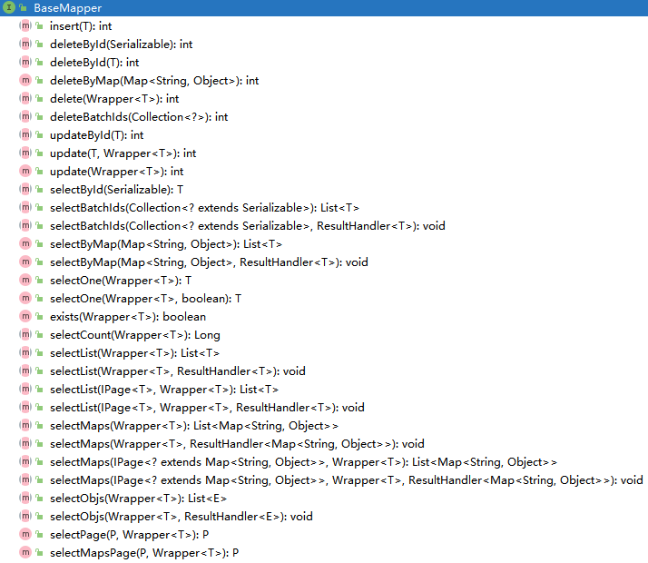

简介 MyBatis-Plus（简称MP）是一个MyBatis的增强工具，在MyBatis的基础上只做增强不做改变，为简化开发、提高效率而生。
特性：
无侵入：只做增强不做改变，引入它不会对现有工程产生影响，如丝般顺滑
损耗小：启动即会自动注入基本CURD，性能基本无损耗，直接面向对象操作
强大的CRUD操作：内置通用Mapper、通用Service，仅仅通过少量配置即可实现单表大部分CRUD操作，更有强大的条件构造器，满足各类使用需求
支持Lambda形式调用：通过Lambda表达式，方便的编写各类查询条件，无需再担心字段写错
支持主键自动生成：支持多达4种主键策略（内含分布式唯一ID生成器 - Sequence），可自由配置，完美解决主键问题
支持ActiveRecord模式：支持ActiveRecord形式调用，实体类只需继承Model类即可进行强大的CRUD操作
支持自定义全局通用操作：支持全局通用方法注入（ Write once, use anywhere ）
内置代码生成器：采用代码或者Maven插件可快速生成Mapper、Model、Service、Controller层代码，支持模板引擎
内置分页插件：基于MyBatis物理分页，开发者无需关心具体操作，配置好插件之后，写分页等同于普通List查询
分页插件支持多种数据库：支持MySQL、MariaDB、Oracle、DB2、H2、HSQL、SQLite、Postgre、SQLServer等多种数据库
内置性能分析插件：可输出SQL语句以及其执行时间，建议开发测试时启用该功能，能快速揪出慢查询
内置全局拦截插件：提供全表delete、update操作智能分析阻断，也可自定义拦截规则，预防误操作
入门案例 创建数据库 数据库脚本如下：
CREATE DATABASE `mybatis_plus`;USE `mybatis_plus`; CREATE TABLE `user `( `id` BIGINT (20 ) NOT NULL COMMENT '主键ID' , `name` VARCHAR (30 ) NULL DEFAULT NULL COMMENT '姓名' , `age` INT (11 ) NULL DEFAULT NULL COMMENT '年龄' , `email` VARCHAR (50 ) NULL DEFAULT NULL COMMENT '邮箱' , PRIMARY KEY (`id`) )ENGINE= InnoDB DEFAULT CHARSET= utf8mb4; DELETE FROM user ;INSERT INTO user (id, name, age, email) VALUES (1 , 'Jone' , 18 , 'test1@baomidou.com' ), (2 , 'Jack' , 20 , 'test2@baomidou.com' ), (3 , 'Tom' , 28 , 'test3@baomidou.com' ), (4 , 'Sandy' , 21 , 'test4@baomidou.com' ), (5 , 'Billie' , 24 , 'test5@baomidou.com' );
初始化工程 创建Spring Boot项目，pom.xml相关依赖如下：
<dependencies > <dependency > <groupId > org.springframework.boot</groupId > <artifactId > spring-boot-starter-test</artifactId > <scope > test</scope > </dependency > <dependency > <groupId > org.springframework.boot</groupId > <artifactId > spring-boot-starter-jdbc</artifactId > </dependency > <dependency > <groupId > com.mysql</groupId > <artifactId > mysql-connector-j</artifactId > <scope > runtime</scope > </dependency > <dependency > <groupId > com.baomidou</groupId > <artifactId > mybatis-plus-boot-starter</artifactId > <version > 3.5.5</version > </dependency > <dependency > <groupId > org.projectlombok</groupId > <artifactId > lombok</artifactId > </dependency > </dependencies >
配置 修改application.yaml配置
spring: datasource: username: root password: 123456 driver-class-name: com.mysql.cj.jdbc.Driver url: jdbc:mysql://localhost:3306/mybatis_plus?userUnicode=true&characterEncoding=UTF-8&useSSL=false&serverTimezone=Asia/Shanghai&allowPublicKeyRetrieval=true
在Spring Boot启动类中添加@MapperScan注解，扫描Mapper文件夹
@SpringBootApplication @MapperScan("com.mybatis_plus.mapper") public class MybatisPlusApplication { public static void main (String[] args) { SpringApplication.run(MybatisPlusApplication.class, args); } }
编码 编写实体类User
@Data @TableName("user") public class User { private Long id; private String name; private Integer age; private String email; }
编写Mapper接口UserMapper
@Repository public interface UserMapper extends BaseMapper <User> {}
测试 添加测试类，进行功能测试
@SpringBootTest class MybatisPlusApplicationTests { @Autowired private UserMapper userMapper; @Test public void testSelectList () { System.out.println("----- selectList method test ------" ); List<User> users = userMapper.selectList(null ); users.forEach(System.out::println); } }
配置日志 在配置文件application.yaml中配置日志
mybatis-plus: configuration: log-impl: org.apache.ibatis.logging.stdout.StdOutImpl
运行之后，可以查看生成的SQL语句，也可以使用Log4jImpl对日志进行打印。
常用注解 @TableName @Data @TableName("user") public class User { private Long id; private String name; private Integer age; private String email; }
设置表前缀：
mybatis-plus: global-config: db-config: table-prefix: t_
@TableId注解 @TableId(value = "uid") private Long id;
@TableField注解 当数据库字段名与定义的字段名不一致时可以使用该注解
@TableField("nickname") private String name;
@TableLogic注解 逻辑删除是为了方便数据恢复和保护数据本身价值的一种方案，但实际就是删除。
在数据库中添加字段is deleted
@TableLogic private Integer isDeleted;
删除操作
update user set deleted = 1 where id = 1 and isDeleted = 0
Mapper CRUD接口 BaseMapper接口简介 在前面的入门案例中我们定义了一个UserMapper接口，代码如下：
@Repository public interface UserMapper extends BaseMapper <User> {}
可以发现，我们在UserMapper中没有声明任何方法，但是我们在测试时使用了selectList()方法，该方法来自于BaseMapper接口，该接口提供了添加、删除、更新和查询的相关方法，具体如下：

insert @Test public void testInsert () { User user = new User (); user.setName("张三" ); user.setAge(18 ); user.setEmail("zhangsan@atguigu.com" ); int result = userMapper.insert(user); System.out.println("result:" + result); System.out.println("id:" + user.getId()); }
delete @Test public void testDeleteById () { int result = userMapper.deleteById(1764458255159918594L ); System.out.println(result); } @Test public void testDeleteByMap () { Map<String, Object> map = new HashMap <>(); map.put("name" , "Tom" ); map.put("age" , 28 ); int result = userMapper.deleteByMap(map); System.out.println(result); } @Test public void testDeleteBatchIds () { int result = userMapper.deleteBatchIds(Arrays.asList(1 , 2 )); System.out.println(result); }
update @Test public void testUpdate () { User user = new User (); user.setId(4L ); user.setName("Sandy" ); user.setAge(18 ); int result = userMapper.updateById(user); System.out.println(result); }
select @Test public void testSelectById () { User user = userMapper.selectById(1L ); System.out.println(user); } @Test public void testSelectBatchIds () { List<User> userList1 = userMapper.selectBatchIds(Arrays.asList(1 , 2 , 3 )); userList1.forEach(System.out::println); } @Test public void testSelectByMap () { Map<String, Object> map = new HashMap <>(); map.put("id" , 1L ); map.put("age" , 18 ); List<User> userList2 = userMapper.selectByMap(map); userList2.forEach(System.out::println); } @Test public void testSelectList1 () { List<User> userList3 = userMapper.selectList(null ); userList3.forEach(System.out::println); }
自定义功能 UserMapper
@Repository public interface UserMapper extends BaseMapper <User> { @MapKey("id") Map<String, Object> selectMapById (Long id) ; }
UserMapper.xml
<?xml version="1.0" encoding="UTF-8" ?> <!DOCTYPE mapper PUBLIC "-//mybatis.org//DTD Mapper 3.0//EN" "http://mybatis.org/dtd/mybatis-3-mapper.dtd" > <mapper namespace ="com.mybatis_plus.mapper.UserMapper" > <select id ="selectMapById" resultType ="java.util.Map" > SELECT id, name, age, email FROM user WHERE id = #{id} </select > </mapper >
测试
@Test public void selectMapById () { Map<String, Object> map = userMapper.selectMapById(1L ); System.out.println(map); }
Service CRUD接口 简介 MyBatis-Plus提供了通用的Mapper接口，即BaseMapper接口，该接口对应DAO层，在该接口中包含常用的CRUD方法。
除了BaseMapper接口，MyBatis-Plus还提供了IService接口，该接口对应Service层。MyBatis-Plus的通用Service CRUD实现了IService接口，进一步封装CRUD。为了避免与BaseMapper中定义的方法混淆，该接口使用get（查询单行）、remove（删除）、list（查询集合）和page（分页）前缀命名的方式进行区别。
自定义Service接口 public interface UserService extends IService <User> { }
@Service public class UserServiceImpl extends ServiceImpl <UserMapper, User> implements UserService {}
测试
@Autowired private UserService userService;@Test public void testGetCount () { long count = userService.count(); System.out.println(count); } @Test public void testInsertMore () { List<User> list = new ArrayList <>(); for (int i = 0 ; i <= 10 ; i++) { User user = new User (); user.setName("test_" + i); user.setAge(20 + i); user.setEmail("test_" + i + "@163.com" ); list.add(user); } boolean b = userService.saveBatch(list); System.out.println(b); }
常用方法 Save boolean save (T entity) ;boolean saveBatch (Collection<T> entityList) ;boolean saveBatch (Collection<T> entityList, int batchSize) ;
参数说明
类型
参数名
描述
T
entity
实体对象
Collection<T>
entityList
实体对象集合
int
batchSize
插入批次数量
Remove boolean remove (Wrapper<T> queryWrapper) ;boolean removeById (Serializable id) ;boolean removeByMap (Map<String, Object> columnMap) ;boolean removeByIds (Collection<? extends Serializable> idList) ;
参数说明
类型
参数名
描述
Wrapper<T>
queryWrapper
实体包装类QueryWrappe
Serializable
id
主键ID
Map<String, Object>
columnMap
表字段map对象
Collection<? extends Serializable>
idList
主键ID列表
Update boolean update (Wrapper<T> updateWrapper) ;boolean update (T updateEntity, Wrapper<T> whereWrapper) ;boolean updateById (T entity) ;boolean updateBatchById (Collection<T> entityList) ;boolean updateBatchById (Collection<T> entityList, int batchSize) ;
Get T getById (Serializable id) ; T getOne (Wrapper<T> queryWrapper) ; T getOne (Wrapper<T> queryWrapper, boolean throwEx) ; Map<String, Object> getMap (Wrapper<T> queryWrapper) ;
参数说明
类型
参数名
描述
boolean
throwEx
有多个result是否抛出异常
List List<T> list () ; List<T> list (Wrapper<T> queryWrapper) ; Collection<T> listByIds (Collection<? extends Serializable> idList) ; Collection<T> listByMap (Map<String, Object> columnMap) ; List<Map<String, Object>> listMaps () ; List<Map<String, Object>> listMaps (Wrapper<T> queryWrapper) ;
Page IPage<T> page (IPage<T> page) ; IPage<T> page (IPage<T> page, Wrapper<T> queryWrapper) ; IPage<Map<String, Object>> pageMaps (IPage<T> page) ; IPage<Map<String, Object>> pageMaps (IPage<T> page, Wrapper<T> queryWrapper) ; Page<User> page = userService.page(new Page <>()); Page<Map<String, Object>> page = userService.pageMaps(new Page <>());
参数说明
类型
参数名
描述
IPage<T>
page
翻页对象
注意：使用时需添加分页插件
@Configuration @MapperScan("com.mybatis_plus.mapper") public class MybatisPlusConfig { @Bean public MybatisPlusInterceptor mybatisPlusInterceptor () { MybatisPlusInterceptor interceptor = new MybatisPlusInterceptor (); interceptor.addInnerInterceptor(new PaginationInnerInterceptor (DbType.MYSQL)); return interceptor; } }
Count int count () ;int count (Wrapper<T> queryWrapper) ;
条件构造器 wrapper介绍 MyBatis-Plus提供了强大的条件构造器，用于构造where条件。
Wrapper：条件构造抽象类 - AbstractWrapper：查询条件封装，用于生成sql中的where语句。 - QueryWrapper：Query封装操作类，用于查询。 - UpdateWrapper：Update条件封装操作类，用于更新。 - AbstractLambdaWrapper：使用Lambda表达式封装wrapper - LambdaQueryWrapper：使用Lambda语法封装条件，用于查询。 - LambdaUpdateWrapper：使用Lambda语法封装条件，用于更新。
AbstractWrapper QueryWrapper（LambdaQueryWrapper）和UpdateWrapper（LambdaUpdateWrapper）的父类，用于生成sql的where条件。
allEq allEq(Map<R, V> params) allEq(Map<R, V> params, boolean null2IsNull) allEq(boolean condition, Map<R, V> params, boolean null2IsNull)
功能说明：全部eq或个别isNull
个别参数说明:
params：key为数据库字段名，value为字段值。null2IsNull：为true则在map的value为null时调用isNull方法，为false时则忽略value为null的。condition：表示该条件是否加入最后生成的sql中。
示例：
例1：allEq({id: 1, name: "老王", age: null}) -> id = 1 and name = '老王' and age is null
例2：allEq({id: 1, name: "老王", age: null}, false) -> id = 1 and name = '老王'
allEq(BiPredicate<R, V> filter, Map<R, V> params) allEq(BiPredicate<R, V> filter, Map<R, V> params, boolean null2IsNull) allEq(boolean condition, BiPredicate<R, V> filter, Map<R, V> params, boolean null2IsNull)
个别参数说明:
filter：过滤函数，是否允许字段传入比对条件中。params、null2IsNull及condition：同上。
示例：
例1: allEq((k,v) -> k.contains("a"), {id: 1, name: "老王", age: null}) -> name = '老王' and age is null
例2: allEq((k,v) -> k.contains("a"), {id: 1, name: "老王", age: null}, false) -> name = '老王'
eq eq(R column, Object val) eq(boolean condition, R column, Object val)
功能说明：等于=
示例：eq("name", "老王") -> name = '老王'
ne ne(R column, Object val) ne(boolean condition, R column, Object val)
功能说明：不等于<>
示例：ne("name", "老王") -> name <> '老王'
gt gt(R column, Object val) gt(boolean condition, R column, Object val)
功能说明：大于>
示例：gt("age", 18) -> age > 18
ge ge(R column, Object val) ge(boolean condition, R column, Object val)
功能说明：大于等于>=
示例：ge("age", 18) -> age >= 18
lt lt(R column, Object val) lt(boolean condition, R column, Object val)
功能说明：小于<
示例：lt("age", 18) -> age < 18
le le(R column, Object val) le(boolean condition, R column, Object val)
功能说明：小于等于<=
示例：le("age", 18) -> age <= 18
between between(R column, Object val1, Object val2) between(boolean condition, R column, Object val1, Object val2)
功能说明：between 值1 and 值2
示例：between("age", 18, 30) -> age between 18 and 30
notBetween notBetween(R column, Object val1, Object val2) notBetween(boolean condition, R column, Object val1, Object val2)
功能说明：not between 值1 and 值2
示例：notBetween("age", 18, 30) -> age not between 18 and 30
like like(R column, Object val) like(boolean condition, R column, Object val)
功能说明：like '%值%'
示例：like("name", "王") -> name like '%王%'
notLike notLike(R column, Object val) notLike(boolean condition, R column, Object val)
功能说明：not like '%值%'
示例：notLike("name", "王") -> name not like '%王%'
likeLeft likeLeft(R column, Object val) likeLeft(boolean condition, R column, Object val)
功能说明：like '%值'
示例：likeLeft("name", "王") -> name like '%王'
likeRight likeRight(R column, Object val) likeRight(boolean condition, R column, Object val)
功能说明：like '值%'
示例：likeRight("name", "王") -> name like '王%'
notLikeLeft notLikeLeft(R column, Object val) notLikeLeft(boolean condition, R column, Object val)
功能说明：not like '%值'
示例：notLikeLeft("name", "王") -> name not like '%王'
notLikeRight notLikeRight(R column, Object val) notLikeRight(boolean condition, R column, Object val)
功能说明：not like '值%'
示例：notLikeRight("name", "王") -> name not like '王%'
isNull isNull(R column) isNull(boolean condition, R column)
功能说明：字段is null
示例：isNull("name") -> name is null
isNotNull isNotNull(R column) isNotNull(boolean condition, R column)
功能说明：字段is not null
示例：isNotNull("name") -> name is not null
in in(R column, Collection<?> value) in(boolean condition, R column, Collection<?> value)
功能说明：字段in (value.get(0), value.get(1), ...)
示例：in("age", {1, 2, 3}) -> age in (1, 2, 3)
in(R column, Object... values) in(boolean condition, R column, Object... values)
功能说明：字段in (v0, v1, ...)
示例：in("age", 1, 2, 3) -> age in (1, 2, 3)
notIn notIn(R column, Collection<?> value) notIn(boolean condition, R column, Collection<?> value)
功能说明：字段not in (value.get(0), value.get(1), ...)
示例：notIn("age", {1, 2, 3}) -> age not in (1, 2, 3)
notIn(R column, Object... values) notIn(boolean condition, R column, Object... values)
功能说明：字段not in (v0, v1, ...)
示例：notIn("age", 1, 2, 3) -> age not in (1, 2, 3)
inSql inSql(R column, String inValue) inSql(boolean condition, R column, String inValue)
功能说明：字段in ( sql语句 )
示例：
例1：inSql("age", "1, 2, 3, 4, 5, 6") -> age in (1, 2, 3, 4, 5, 6)
例2：inSql("id", "select id from table where id < 3") -> id in (select id from table where id < 3)
notInSql notInSql(R column, String inValue) notInSql(boolean condition, R column, String inValue)
字段not in ( sql语句 )
示例：
例1：notInSql("age", "1, 2, 3, 4, 5, 6") -> age not in (1, 2, 3, 4, 5, 6)
例2：notInSql("id", "select id from table where id < 3") -> id not in (select id from table where id < 3)
groupBy groupBy(R... columns) groupBy(boolean condition, R... columns)
功能说明：分组group by 字段, ...
示例：groupBy("id", "name") -> group by id, name
orderByAsc orderByAsc(R... columns) orderByAsc(boolean condition, R... columns)
功能说明：排序order by 字段, ... ASC
示例：orderByAsc("id", "name") -> order by id ASC, name ASC
orderByDesc orderByDesc(R... columns) orderByDesc(boolean condition, R... columns)
功能说明：排序order by 字段, ... DESC
示例：orderByDesc("id", "name") -> order by id DESC, name DESC
orderBy orderBy(boolean condition, boolean isAsc, R... columns)
功能说明：排序order by 字段, ...
示例：orderBy(true, true, "id", "name") -> order by id ASC, name ASC
having having(String sqlHaving, Object... params) having(boolean condition, String sqlHaving, Object... params)
功能说明：having ( sql语句 )
示例：
例1：having("sum(age) > 10") -> having sum(age) > 10
例2：having("sum(age) > {0}", 11) -> having sum(age) > 11
func func(Consumer<Children> consumer) func(boolean condition, Consumer<Children> consumer)
功能说明：func方法主要方便在出现if...else时调用不同方法能不断链
示例: func(i -> if(true) {i.eq("id", 1)} else {i.ne("id", 1)})
or or() or(boolean condition)
功能说明：拼接or
注意事项：主动调用or表示紧接着下一个方法不是使用and连接，不调用or则默认使用and连接。
示例：eq("id", 1).or().eq("name", "老王") -> id = 1 or name = '老王'
or(Consumer<Param> consumer) or(boolean condition, Consumer<Param> consumer)
功能说明：or嵌套
示例：or(i -> i.eq("name", "李白").ne("status", "活着")) -> or (name = '李白' and status <> '活着')
and and(Consumer<Param> consumer) and(boolean condition, Consumer<Param> consumer)
功能说明：and嵌套
示例：and(i -> i.eq("name", "李白").ne("status", "活着")) -> and (name = '李白' and status <> '活着')
apply apply(String applySql, Object... params) apply(boolean condition, String applySql, Object... params)
功能说明：拼接sql
注意事项：该方法可用于数据库函数动态入参的params，对应前面applySql内部的{index}部分，这样不会有sql注入风险，反之会有！
示例：
例1：apply("id = 1") -> id = 1
例2：apply("date_format(dateColumn, '%Y-%m-%d') = '2008-08-08'") -> date_format(dateColumn, '%Y-%m-%d') = '2008-08-08'")
例3：apply("date_format(dateColumn, '%Y-%m-%d') = {0}", "2008-08-08") -> date_format(dateColumn, '%Y-%m-%d') = '2008-08-08'")
last last(String lastSql) last(boolean condition, String lastSql)
功能说明：无视优化规则直接拼接到sql的最后
注意事项：只能调用一次，多次调用以最后一次为准，有sql注入的风险，请谨慎使用！
示例：last("limit 1")
exists exists(String existsSql) exists(boolean condition, String existsSql)
功能说明：拼接exists ( sql语句 )
示例：exists ("select id from table where age = 1") -> exists (select id from table where age = 1)
notExists notExists(String notExistsSql) notExists(boolean condition, String notExistsSql)
功能说明：拼接not exists ( sql语句 )
示例：notExists ("select id from table where age = 1") -> not exists (select id from table where age = 1)
QueryWrapper select select(String... sqlSelect) select(Class<T> entityClass, Predicate<TableFieldInfo> predicate)
功能说明：设置查询字段
说明：方法二用于过滤查询字段，主键无法过滤
示例：
例1：select("id", "name", "age") -> 指定查询主键、名字、年龄字段
例2：select(User.class, i -> !i.getColumn().equals("manager_id") && !i.getColumn().equals("create_time")) -> 查询User对象中除manager_id和create_time外其它字段的数据
案例 QueryWrapper<User> queryWrapper = new QueryWrapper <>(); queryWrapper.like("name" ,"a" ).between("age" ,20 , 30 ).isNotNull("email" ); List<User> userList = userMapper.selectList(queryWrapper); queryWrapper.orderByDesc("age" ).orderByAsc("id" ); List<User> list = userMapper.selectList(queryWrapper); queryWrapper.isNull("email" ); int i = userMapper.delete(queryWrapper);queryWrapper.gt("age" , 20 ).like("name" , "a" ).or().isNull("email" ); User user = new User ();user.setName("小明" ); user.setEmail("test@atguigu.com" ); int result = userMapper.update(user, queryWrapper);queryWrapper.like("name" , "a" ).and(i -> i.gt("age" , 20 ).or().isNull("email" )); User user = new User ();user.setName("小红" ); user.setEmail("tset@atguigu.com" ); int result = userMapper.update(user, queryWrapper);queryWrapper.select("name" , "age" , "email" ); List<Map<String, Object>> maps = userMapper.selectMaps(queryWrapper); queryWrapper.inSql("id" , "select id from user where id <= 5" ); List<User> list = userMapper.selectList(queryWrapper); String username = "" ;Integer ageBegin = 20 ;Integer ageEnd = 30 ;if (StringUtils.isNotBlank(username)) { queryWrapper.like("name" , username); } if (ageBegin != null ) { queryWrapper.ge("age" , ageBegin); } if (ageEnd != null ) { queryWrapper.le("age" , ageEnd); } List<User> list = userMapper.selectList(queryWrapper); String username = "a" ;Integer ageBegin = null ;Integer ageEnd = 30 ;queryWrapper.like(StringUtils.isNotBlank(username), "name" , username).ge(ageBegin != null , "age" , ageBegin).lt(ageEnd != null , "age" , ageEnd); List<User> list = userMapper.selectList(queryWrapper);
UpdateWrapper set set(String column, Object val) set(boolean condition, String column, Object val)
功能说明：sql set字段
示例：
例1：set("name", "老李头")
例2：set("name", "") -> 数据库字段值变为空字符串
例3：set("name", null) -> 数据库字段值变为null
setSql 功能说明：设置set部分sql
示例：setSql("name = '老李头'")
案例 UpdateWrapper<User> updateWrapper = new UpdateWrapper <>(); updateWrapper.like("name" , "a" ).and(i -> i.gt("age" , 20 ).or().isNull("email" )); updateWrapper.set("name" , "小黑" ); updateWrapper.set("email" , "abc@atguigu.com" ); int result = userMapper.update(null , updateWrapper);
LambdaQueryWrapper @Test public void testSelectWrapper11 () { String username = "a" ; Integer ageBegin = null ; Integer ageEnd = 30 ; LambdaQueryWrapper<User> lambdaQueryWrapper = new LambdaQueryWrapper <>(); lambdaQueryWrapper.like(StringUtils.isNotBlank(username), User::getName, username) .ge(ageBegin != null , User::getAge, ageBegin) .lt(ageEnd != null , User::getAge, ageEnd); List<User> list = userMapper.selectList(lambdaQueryWrapper); list.forEach(System.out::println); }
LambdaQueryWrapper也可以通过new QueryWrapper().lambda()方法获取。
LambdaUpdateWrapper @Test public void testSelectWrapper12 () { LambdaUpdateWrapper<User> updateWrapper = new LambdaUpdateWrapper <>(); updateWrapper.like(User::getName, "a" ) .and(i -> i.gt(User::getAge, 20 ) .or() .isNull(User::getEmail)); updateWrapper.set(User::getName, "小黑" ).set(User::getEmail, "abc@atguigu.com" ); int result = userMapper.update(null , updateWrapper); System.out.println(result); }
LambdaUpdateWrapper也可以通过new UpdateWrapper().lambda()方法获取。
插件 分页插件 Mybatis-Plus自带分页插件，只需简单配置即可实现分页功能
编写配置类MybatisPlusConfig
@Configuration @MapperScan("com.mybatis_plus.mapper") public class MybatisPlusConfig { @Bean public MybatisPlusInterceptor mybatisPlusInterceptor () { MybatisPlusInterceptor interceptor = new MybatisPlusInterceptor (); interceptor.addInnerInterceptor(new PaginationInnerInterceptor (DbType.MYSQL)); return interceptor; } }
测试
@Test public void testPage () { Page<User> page = new Page <>(1 , 3 ); userMapper.selectPage(page, null ); System.out.println(page.getRecords()); System.out.println(page.getPages()); System.out.println(page.getTotal()); System.out.println(page.hasNext()); System.out.println(page.hasPrevious()); }
自定义的分页功能
Page<User> selectPageVo (@Param("page") Page<User> page, @Param("age") Integer age) ;
<select id ="selectPageVo" resultType ="com.mybatis_plus.pojo.entity.User" > SELECT id, name, age, email FROM user WHERE age > #{age} </select >
@Test public void testPageVo () { Page<User> page = new Page <>(); userMapper.selectPageVo(page, 20 ); System.out.println(page.getRecords()); System.out.println(page.getPages()); System.out.println(page.getTotal()); System.out.println(page.hasNext()); System.out.println(page.hasPrevious()); }
乐观锁 准备工作 数据库中增加商品表
CREATE TABLE product( id BIGINT (20 ) NOT NULL COMMENT '主键id' , NAME VARCHAR (30 ) NULL DEFAULT NULL COMMENT '商品名称' , price INT (11 ) DEFAULT 0 COMMENT '价格' , VERSION INT (11 ) DEFAULT 0 COMMENT '乐观锁版本号' , PRIMARY KEY (id) ); INSERT INTO product (id, NAME, price) VALUES (1 , '外星人' , 10000 );
编写实体类
@Data public class Product { private Long id; private String name; private Integer price; private Integer version; }
编写ProductMapper
@Repository public interface ProductMapper extends BaseMapper <Product> {}
模拟修改冲突问题 @Test public void testProduct1 () { Product productLi = productMapper.selectById(1 ); System.out.println("小李查询的商品价格：" + productLi.getPrice()); Product productWang = productMapper.selectById(1 ); System.out.println("小王查询的商品价格：" + productWang.getPrice()); productLi.setPrice(productLi.getPrice() + 50 ); productMapper.updateById(productLi); productWang.setPrice(productWang.getPrice() - 30 ); productMapper.updateById(productWang); Product productBOSS = productMapper.selectById(1 ); System.out.println("老板查询的商品价格：" + productBOSS.getPrice()); }
乐观锁的实现流程 取出记录数，获取当前的version
SELECT id, name, price, version FROM product WHERE id = 1
更新时，version+1，如果where语句中的version版本不对，则更新失败
UPDATE product SET price = price + 50 , version = version + 1 WHERE id = 1 AND version = 1 ;
Mybatis-Plus实现乐观锁 修改实体类
@Data public class Product { private Long id; private String name; private Integer price; @Version private Integer version; }
在配置文件中添加乐观锁插件
@Configuration @MapperScan("com.mybatis_plus.mapper") public class MybatisPlusConfig { @Bean public MybatisPlusInterceptor mybatisPlusInterceptor () { MybatisPlusInterceptor interceptor = new MybatisPlusInterceptor (); interceptor.addInnerInterceptor(new PaginationInnerInterceptor (DbType.MYSQL)); interceptor.addInnerInterceptor(new OptimisticLockerInnerInterceptor ()); return interceptor; } }
重新测试
@Test public void testProduct2 () { Product productLi = productMapper.selectById(1 ); System.out.println("小李查询的商品价格：" + productLi.getPrice()); Product productWang = productMapper.selectById(1 ); System.out.println("小王查询的商品价格：" + productWang.getPrice()); productLi.setPrice(productLi.getPrice() + 50 ); productMapper.updateById(productLi); productWang.setPrice(productWang.getPrice() - 30 ); int result = productMapper.updateById(productWang); if (result == 0 ) { System.out.println("操作失败，正在进行重试..." ); Product productNew = productMapper.selectById(1 ); productNew.setPrice(productNew.getPrice() - 30 ); productMapper.updateById(productNew); } Product productBoss = productMapper.selectById(1 ); System.out.println("老板查询的商品价格：" + productBoss.getPrice()); }
通用枚举 表中有些字段的值是固定的，例如性别（男、女），此时我们可以使用Mybatis-Plus的通用枚举来实现。
数据库user表添加sex字段，并在实体中添加属性
创建枚举类型
@Getter public enum SexEnum { MALE(1 , "男" ), FEMALE(2 , "女" ); @EnumValue private Integer sex; private String sexName; SexEnum(Integer sex, String sexName) { this .sex = sex; this .sexName = sexName; } }
测试
@Test public void testEnum () { User user = new User (); user.setName("admin" ); user.setAge(33 ); user.setEmail("admin@163.com" ); user.setSex(SexEnum.MALE); int insert = userMapper.insert(user); System.out.println(insert); } @Test public void testEnumSelect () { QueryWrapper<User> queryWrapper = new QueryWrapper <>(); queryWrapper.eq("name" , "admin" ); System.out.println(userService.getOne(queryWrapper)); }
若希望性别显示为中文，需重写SexEnum的toString()方法
public enum SexEnum { ... @Override public String toString () { return this .sexName; } }
重新运行testEnumSelect，结果 => User(id=1768155412849340418, name=admin, age=33, email=admin@163.com, sex=男)
代码生成器 引入依赖
<dependency > <groupId > com.baomidou</groupId > <artifactId > mybatis-plus-generator</artifactId > <version > 3.5.1</version > </dependency > <dependency > <groupId > org.freemarker</groupId > <artifactId > freemarker</artifactId > <version > 2.3.28</version > <scope > compile</scope > </dependency >
快速生成
public class FastAutoGeneratorTest { public static void main (String[] args) { FastAutoGenerator.create("jdbc:mysql://localhost:3306/mybatis_plus?userUnicode=true&characterEncoding=UTF-8&useSSL=false&serverTimezone=Asia/Shanghai&allowPublicKeyRetrieval=true" , "root" , "123456" ) .globalConfig(builder -> { builder.author("llc" ) .fileOverride() .outputDir("D://mybatis-plus" ); }) .packageConfig(builder -> { builder.parent("com" ) .moduleName("mybatis-plus" ) .pathInfo(Collections.singletonMap(OutputFile.mapperXml, "D://mybatis-plus" )); }) .strategyConfig(builder -> { builder.addInclude("user" ) .addTablePrefix("t_" , "c_" ); }) .templateEngine(new FreemarkerTemplateEngine ()) .execute(); } }
多数据源 创建数据库mybatis_plus_1及表product
CREATE DATABASE mybatis_plus_1;USE mybatis_plus_1; CREATE TABLE product( id BIGINT (20 ) NOT NULL COMMENT '主键id' , NAME VARCHAR (30 ) NULL DEFAULT NULL COMMENT '商品名称' , price INT (11 ) DEFAULT 0 COMMENT '价格' , VERSION INT (11 ) DEFAULT 0 COMMENT '乐观锁版本号' , PRIMARY KEY (id) ); INSERT INTO product (id, NAME, price) VALUES (1 , '外星人' , 100 );
删除mybatis_plus库中的product表
USE mybatis_plus; DROP TABLE IF EXISTS product;
引入依赖
<dependency > <groupId > com.baomidou</groupId > <artifactId > dynamic-datasource-spring-boot-starter</artifactId > <version > 3.5.0</version > </dependency >
配置多数据源
spring: datasource: dynamic: primary: master strict: false datasource: master: url: jdbc:mysql://localhost:3306/mybatis_plus?userUnicode=true&characterEncoding=UTF-8&useSSL=false&serverTimezone=Asia/Shanghai&allowPublicKeyRetrieval=true driver-class-name: com.mysql.cj.jdbc.Driver username: root password: 123456 slave_1: url: jdbc:mysql://localhost:3306/mybatis_plus_1?userUnicode=true&characterEncoding=UTF-8&useSSL=false&serverTimezone=Asia/Shanghai&allowPublicKeyRetrieval=true driver-class-name: com.mysql.cj.jdbc.Driver username: root password: 123456
创建UserService
public interface UserService extends IService <User> { }
@Service public class UserServiceImpl extends ServiceImpl <UserMapper, User> implements UserService {}
创建ProductService
public interface ProductService extends IService <Product> { }
@DS("slave_1") @Service public class ProductServiceImpl extends ServiceImpl <ProductMapper, Product> implements ProductService { }
测试
@Test public void testDynamicDatasource () { System.out.println(userService.getById(1 )); System.out.println(productService.getById(1 )); }